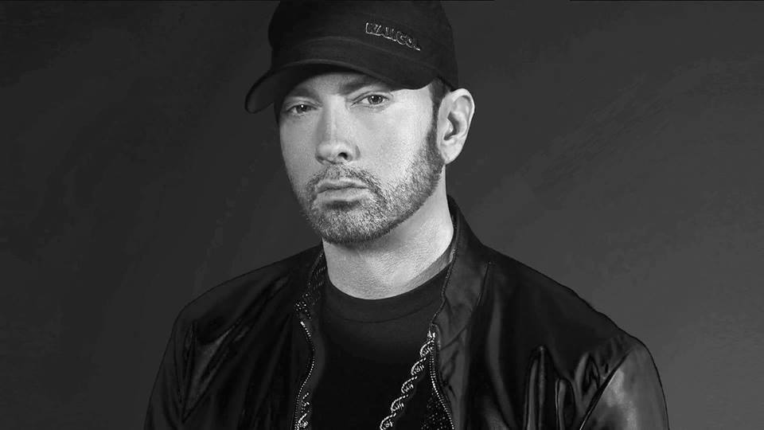

Rap
Rapowanie (znane też jako emceeing, MCing lub po prostu rymowanie) to „wypowiadanie lub rytmiczne recytowanie rymujących się słów przy mocnym akompaniamencie”. Zazwyczaj składają się na nie złożone gry słowne, szybka „nawijka” i wykorzystanie ulicznego slangu, którego część przynależy wyłącznie do kultury hip-hopowej. Rapowanie wykonywane jest do bitu, który może być stworzony przez DJa albo bitboksera. Rapować można również bez akompaniamentu. Składniki rapu to treść, flow („płynięcie” po bicie, na które składają się rytm i rymy) oraz nawijka. Użycie słowa „rap” do opisu szybkiej, slangowej mowy i błyskotliwej riposty datuje się na długo przed powstaniem tej formy muzycznej. MCing to forma ekspresji obecna w antycznej kulturze afrykańskiej oraz tradycji oralnej. W historii społeczności afroamerykańskiej werbalne akrobacje oraz potyczki z udziałem rymów cieszyły się dużą popularnością.Jedni z najpopularniejszych:
Sokół

Poczytaj
Posłuchaj
Bedoes
Poczytaj
Posłuchaj
Pezet
Poczytaj
Posłuchaj
Eminem
 Poczytaj
Posłuchaj
I wiele, wiele więcej innych, jednak moim zdaniem Ci zasługują na największą uwagę.
2019 © Bartosz Szymański wszystkie prawa zastrzeżone! : edziu2001c@gmail.com.